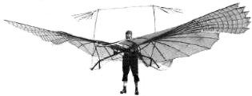

|
 |
| This collection of literature references is focusing on receptor binding
and activity data and the synthesis of (putative) agonists for the 5-HT2A
serotonin receptor subtype.
Each reference comes with a short abstract. In the future I am planning to include also graphical abstracts, i.e. small pictures of chemical structures or reaction sequences. If you like to participate in this still growing database (and you are invited to do so!), please send me your formatted and commented references as an email attachement. This is the 5th preliminary (and a bit chaotical) release with over 570 entrances. |